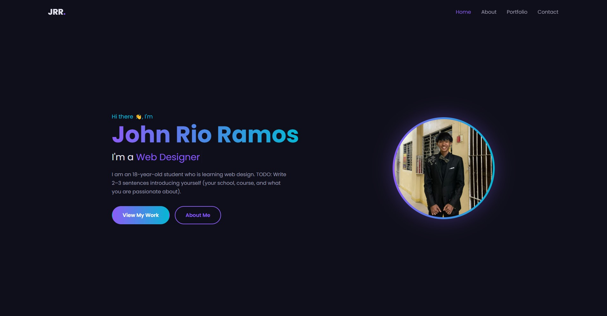
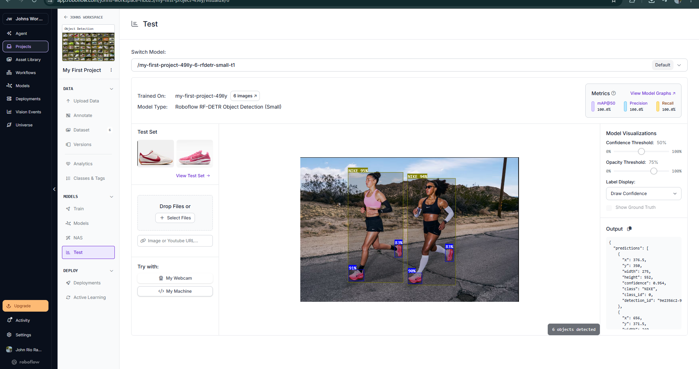
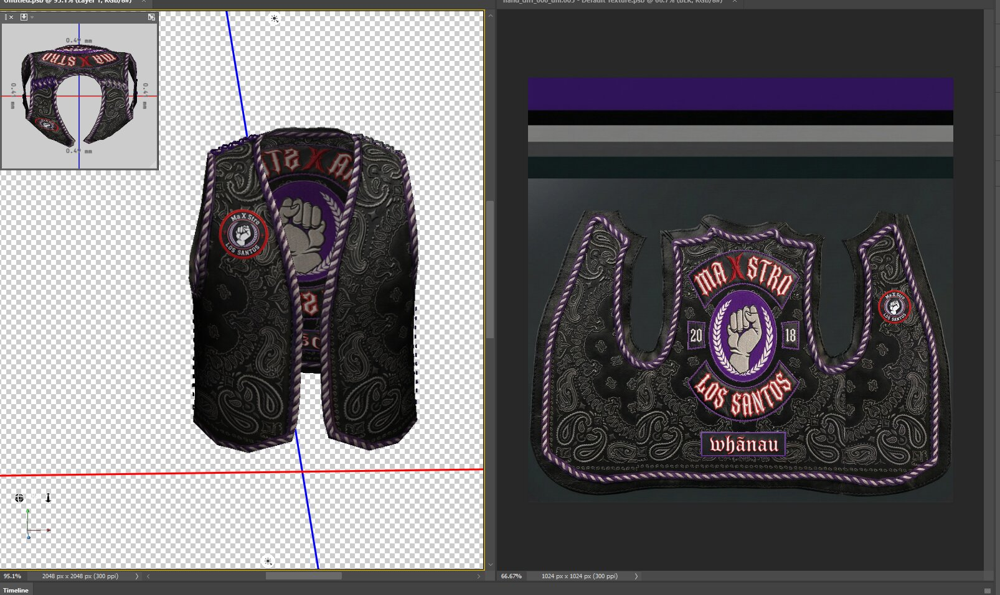

Personal Portfolio Website
A multi-page personal website built from scratch using HTML and an external CSS stylesheet. It includes a home, about, portfolio, and contact page.
A collection of my projects and works.

A multi-page personal website built from scratch using HTML and an external CSS stylesheet. It includes a home, about, portfolio, and contact page.

An object detection model I trained on Roboflow to recognize Nike shoes in photos. I uploaded and labeled my own images, trained an RF-DETR model, and tested it on new pictures, where it detected the shoes with up to 95% confidence.

Custom clothing designs for FiveM, a multiplayer modification of GTA V. I edited the textures of existing clothes to create new designs and colors, then tested them in-game on a player character.